10nm급 DRAM BEOL 공정 정리
BEOL 전체 구조 · PMD 형성 · M1 · M2 · 듀얼 다마신 · M3 · M4 · Passivation과 Bump · 전체 공정 요약 흐름
1. BEOL 전체 구조 개요
- 1a dram 사례를 가지고 살펴볼 예정
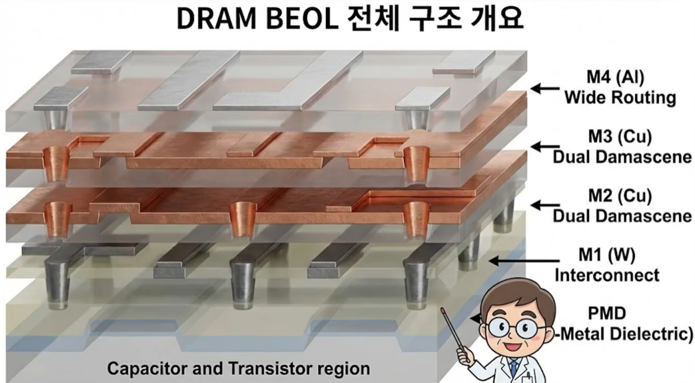
- 저항값, 배선 간 capacitance, electromigration과 같은 배선의 신뢰성이 여기에서 결정된다.
2. PMD(Pre-Metal Dielectric) 형성
2-1. PMD 증착
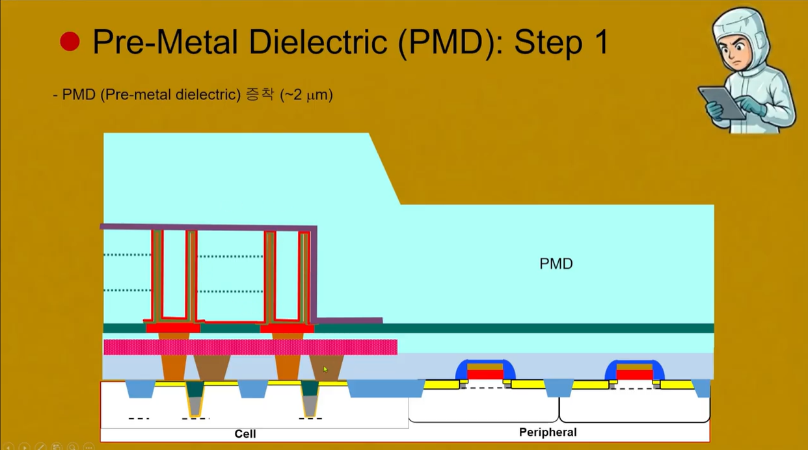
- PMD(Pre-metal Dielectric) 층을 먼저 증착하게 된다. 얘는 Cell 영역과 금속배선을 완벽하게 분리한다.
- 2μm의 산화막을 증착하게 되면 Cell 지역의 Capacitor 때문에 Peri 부분과 큰 단차가 존재하게 된다. 따라서 이대로는 공정을 진행할 수 없다.
2-2. 단차 해소: Cell 영역 산화막 식각
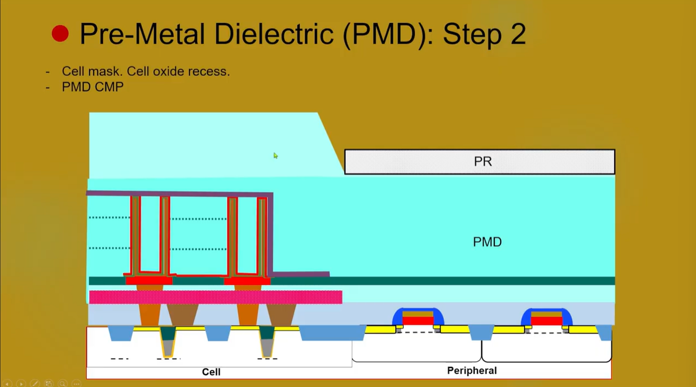
- 이 경우에는 PMD 층에 산화막을 매우 두껍게 증착하기 때문에 CMP로 갈아서 해결할 수 없다. 그래서 식각을 진행한다.
2-3. PMD CMP 평탄화
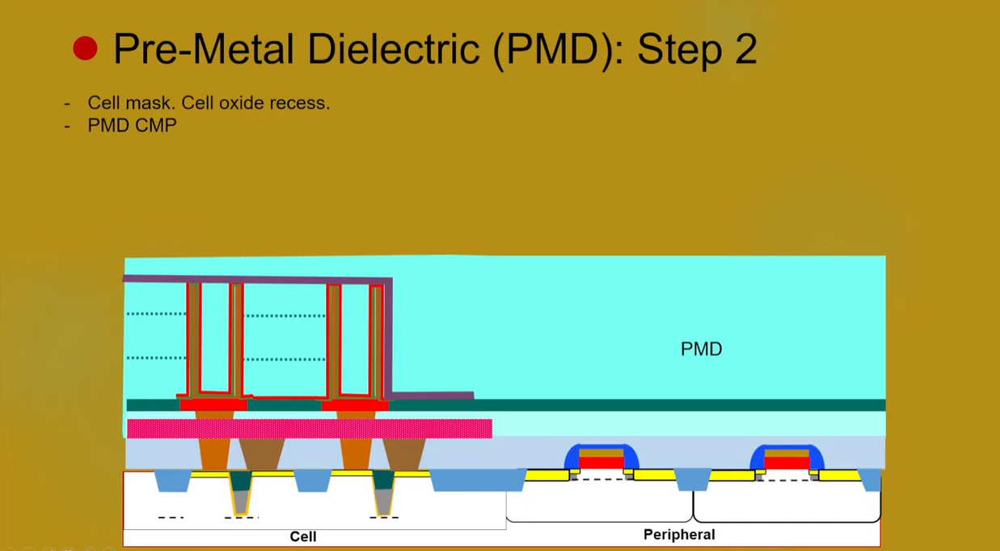
- 식각을 진행하고 나서 약간 울퉁불퉁 한 것은 CMP를 통해 평탄화를 진행한다.
3. M1 공정
3-1. M1C(Metal1 Contact) 형성
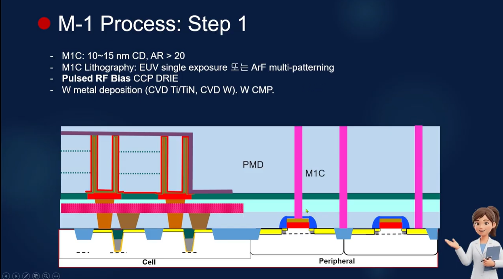
- 가장 처음 하는 작업은 Peri 지역의 Transistor와 금속 배선을 연결하는 것이다.
- M1의 Contact을 진행하게 되는데, M1C라고 한다.
- 이때 Metal1 contact의 CD는 10~15nm, Aspect Ratio는 20이 넘어갈만큼 크다.
- Contact의 패턴을 형성하기 위해서는 EUV Single exposure를 진행하던가, ArF multi patterning을 진행한다.
- 원하는 Contact의 CD를 얻는 것도 중요하지만, CD의 변화폭이 크지 않게 잘 제어하는 것이 더 중요하다.
- 식각을 한 이후에는 CVD로 Ti, TiN을 증착하고 W를 증착해준다. WF₆와 H₂를 사용해서 CVD를 진행하고 CMP를 통해 평탄화 시켜준다.
3-2. M1 배선과 다마신 공정
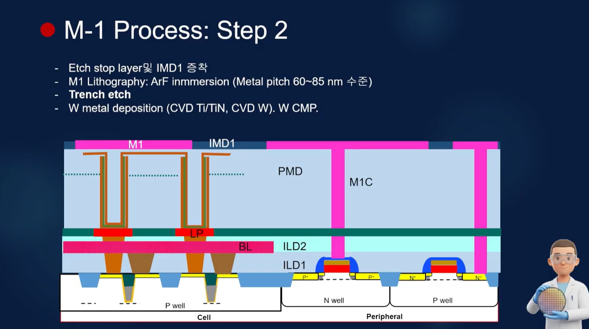
- M1의 pitch가 작아짐에 따라 다마신 공정을 사용하게 됨
- 그래서 다마신 공정을 진행하기 위해 IMD를 먼저 깔아주게 된다.
3-3. M1 형성 후 단면
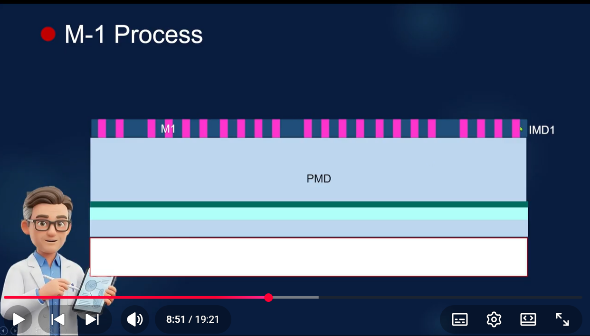
- 측면에서 봤을 때는 이렇게 생김
4. M2 공정
4-1. IMD2A / IMD2B와 듀얼 다마신 패터닝
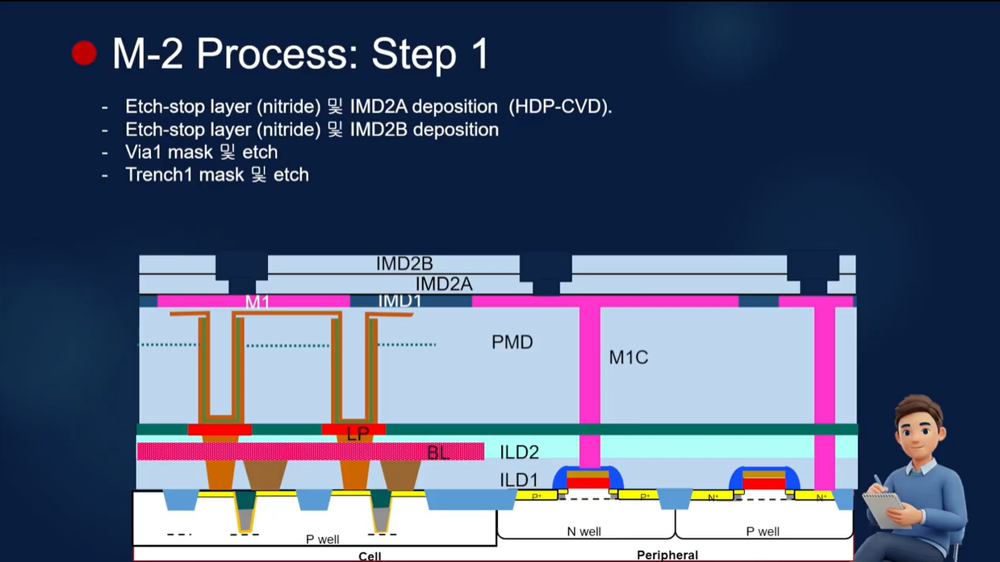
- IMD2A는 안정적인 Oxide를 사용한다고 함
- IMD2B는 저 위에 배선이 달리기 때문에 low-k 물질로 제작한다.
- 듀얼 다마신 패터닝을 진행하게 된다.
- Via1은 좌측에 M1까지 연결되는 금속임.
4-2. 배리어 · Cu Seed · 전기도금
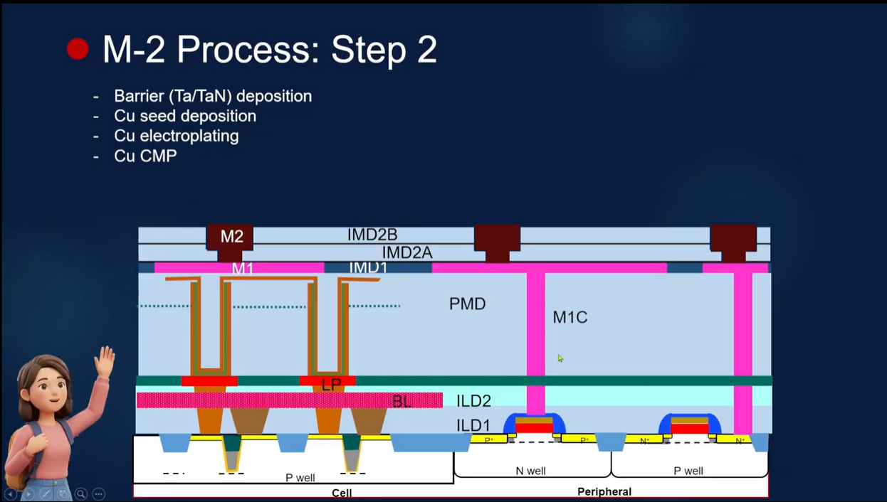
- Ta, TaN을 먼저 깔고, 전기 도금법으로 채우게 된다. 그래서 구리는 채울 때 seed deposition을 사용한다.
*W 에서도 Ti, TiN을 먼저 까는데 Ti는 접착력을 높여주고, TiN는 확산을 막아준다. Cu도 마찬가지로 Ta는 Cu seed가 잘 성장할 수 있게 해주고, TaN는 확산을 막아준다.
- 이후 열처리를 통해 grain growth를 시키고 stress를 완화해서 electro migration 신뢰성 특성을 높인다.
- 여기 설명도 조금 날렸음
5. 듀얼 다마신: Trench First vs Via First
5-1. 두 방식의 식각 순서
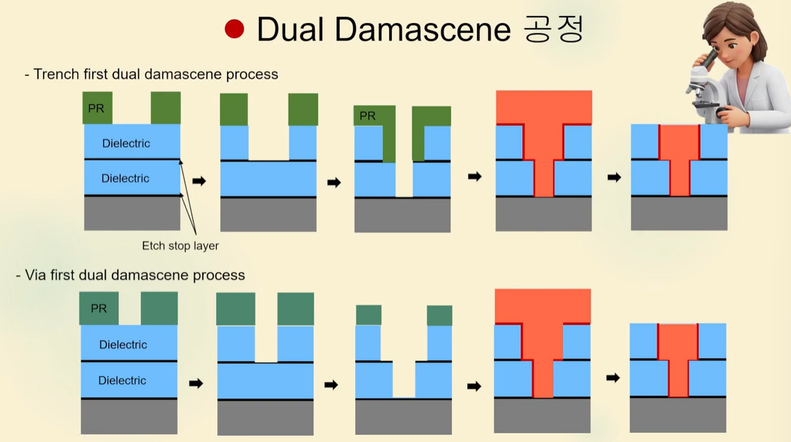
- Trench가 먼저인 것과, Via가 먼저인 것이 다른 것이다.
- Trench first에서는 먼저 Trench를 Etch stop layer까지 식각을 진행한다. 그리고나서 Via를 식각해준다.
- Via 먼저인 경우는 Via를 식각하고, 그 다음 Trench를 식각하는 메커니즘이다.
5-2. Via First를 택하는 이유
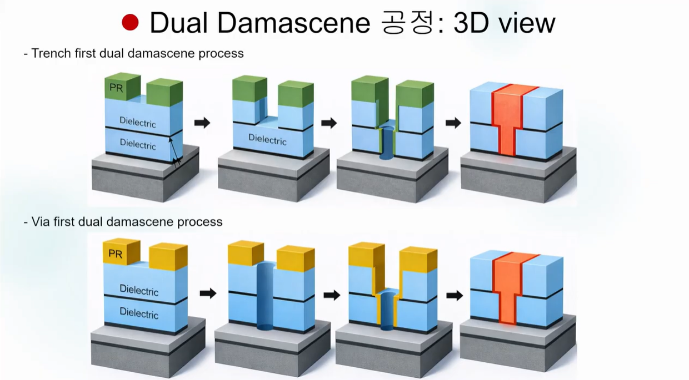
- Trench를 먼저 제작하고 Via를 제작하면 생기는 문제 → overylay오차, Via 바닥의 손상 문제, CD 변동에 취약한 문제가 있다. 변동성에 취약하다는 것은 곧 수율 저하로 이어진다는 의미이다.
- Via를 먼저 제작하면 얻는 이점 → 변동성이 큰 Via를 먼저 식각한다. Trench가 그래도 그나마 Via보단 쉽기 때문에 변동성 측면에서 이득이다.
- 각각의 장단이 있지만, 10nm 급의 DRAM 제작시에 수율을 확보하기에는 Via를 먼저 만드는 편이 낫다고 한다.
6. M3 공정
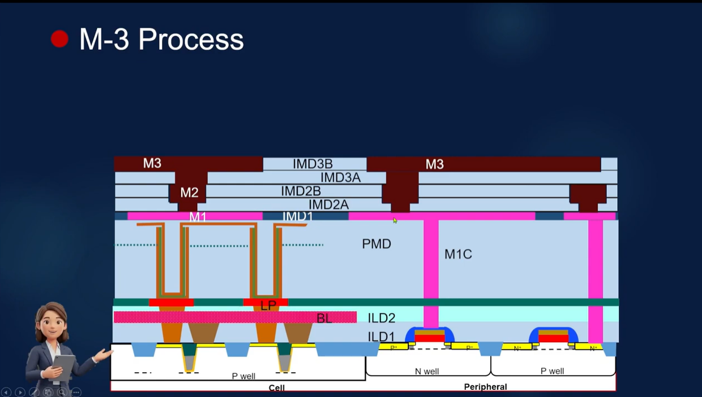
- M3 층 역시 구리 dual 다마신 공정을 통해 제작한다고 함.
- 추가적인 설명이 있었지만 일단 Pass
7. M4(Top Metal) 공정
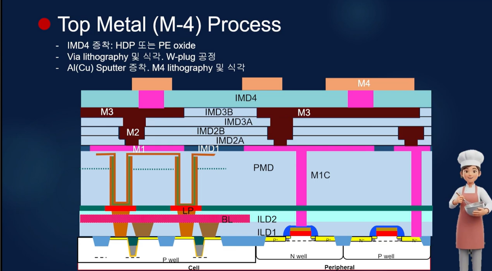
- 일단 IMD4라는 절연막을 깔게 된다.
- Metal3와 Metal4를 연결시켜줄 Via를 리소그래피 공정과 식각 통해 뚫어주게 된다.
- 이때 전형적인 텅스텐 배선 공정 방식이 쓰인다. Ti, TiN을 깔아주고, W or Al를 사용해서 Via를 채워주고 CMP를 진행한다.
- M4 금속은 Al or Cu를 sputter 증착한 다음 리소 및 식각을 진행한다.
- M4 자체에는 미세화가 중요한건 아니고 안정적인 것이 중요해서 Al을 사용하는 것이라고 함.
8. Passivation과 Bump
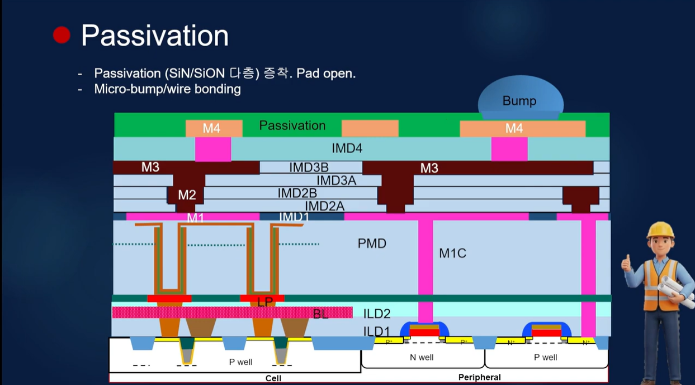
- 칩을 외부 환경으로부터 보호해주는 층을 형성하고, SiN이나 SiON으로 이루어진다.
- 충격, 오염으로부터 보호해서 DRAM의 장기적인 신뢰성을 보장해준다.
- Micro Bump를 위해 Al Pad를 살짝 노출시킨다. 예전에는 Bump가 아니라 Wire bonding을 사용했지만 최근에는 Micro Bump를 사용한다.
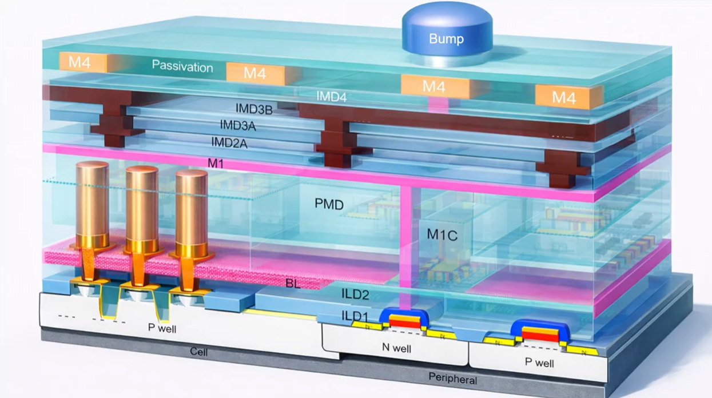